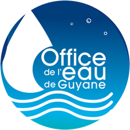

Charte graphique — fiches de contrôle terrain
Office de l’Eau de Guyane · guide de style vivant (js/ui/sheet-chrome.js, js/ui/icons.js, css/sheet.css, styles.css)
Plein soleil
Application
Chargement…